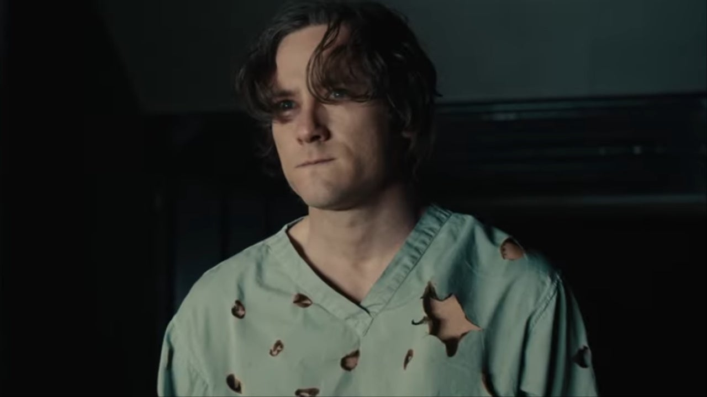

Robert Reynolds / Sentinela
Interpretado por: Lewis Pullman
Bob Reynolds, também conhecido como Sentinela, é um ser com poderes comparáveis aos dos Vingadores combinados, mas atormentado por um alter ego sombrio chamado Vácuo. Em Thunderbolts, sua luta interna entre o bem e o mal representa uma ameaça tanto para a equipe quanto para o mundo. A presença de Bob adiciona uma camada de complexidade e perigo à missão dos Thunderbolts.